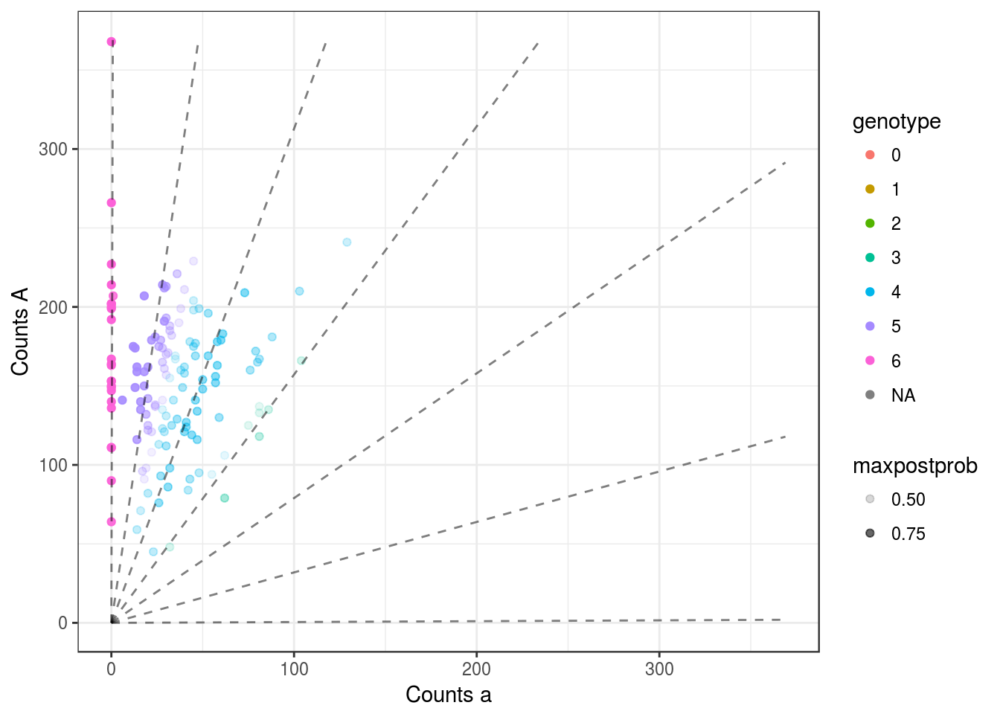

mupdog no cor
David Gerard
December 20, 2017
Abstract
I see if not updatign the correlation matrix makes the inbreeding coefficients non-zero.
Fit mupdog
library(tidyverse)## Loading tidyverse: ggplot2
## Loading tidyverse: tibble
## Loading tidyverse: tidyr
## Loading tidyverse: readr
## Loading tidyverse: purrr
## Loading tidyverse: dplyr## Conflicts with tidy packages ----------------------------------------------## filter(): dplyr, stats
## lag(): dplyr, statslibrary(mupdog)
refmat <- as.matrix(read.csv("/home/david/Code/reproduce_genotyping/Output/shirasawa_snps/example_refcounts.csv", row.names = 1))
sizemat <- as.matrix(read.csv("/home/david/Code/reproduce_genotyping/Output/shirasawa_snps/example_readcounts.csv", row.names = 1))
nind <- nrow(refmat)
nsnps <- ncol(refmat)Try it out!
mout <- mupdog::mupdog(refmat = refmat, sizemat = sizemat, ploidy = 6, verbose = FALSE,
control = list(obj_tol = 10^-5), num_clust = 7, update_cor = FALSE)## iteration: 1
## objective: -744547
## err: Inf
##
## iteration: 2
## objective: -689031
## err: 0.08057
##
## iteration: 3
## objective: -674908
## err: 0.02093
##
## iteration: 4
## objective: -669841
## err: 0.007564
##
## iteration: 5
## objective: -667967
## err: 0.002805
##
## iteration: 6
## objective: -667058
## err: 0.001363
##
## iteration: 7
## objective: -666476
## err: 0.0008734
##
## iteration: 8
## objective: -666055
## err: 0.0006331
##
## iteration: 9
## objective: -665737
## err: 0.000477
##
## iteration: 10
## objective: -665491
## err: 0.000369
##
## iteration: 11
## objective: -665299
## err: 0.0002897
##
## iteration: 12
## objective: -665147
## err: 0.000228
##
## iteration: 13
## objective: -665030
## err: 0.0001767
##
## iteration: 14
## objective: -664939
## err: 0.0001362
##
## iteration: 15
## objective: -664869
## err: 0.0001054
##
## iteration: 16
## objective: -664814
## err: 8.246e-05
##
## iteration: 17
## objective: -664770
## err: 6.687e-05
##
## iteration: 18
## objective: -664732
## err: 5.652e-05
##
## iteration: 19
## objective: -664700
## err: 4.855e-05
##
## iteration: 20
## objective: -664672
## err: 4.222e-05
##
## iteration: 21
## objective: -664647
## err: 3.683e-05
##
## iteration: 22
## objective: -664627
## err: 3.092e-05
##
## iteration: 23
## objective: -664610
## err: 2.475e-05
##
## iteration: 24
## objective: -664597
## err: 1.982e-05
##
## iteration: 25
## objective: -664586
## err: 1.621e-05
##
## iteration: 26
## objective: -664577
## err: 1.376e-05
##
## iteration: 27
## objective: -664569
## err: 1.196e-05
##
## iteration: 28
## objective: -664562
## err: 1.061e-05
##
## iteration: 29
## objective: -664556
## err: 9.363e-06Look at Results
Correlations should all be 0.
hist(mout$cor_mat[upper.tri(mout$cor_mat)])
Still don’t see inbreeding estimated greater than 0.
hist(log(mout$inbreeding))In high-bias SNP’s, the genotyping seems to be a little bit off.
for (index in 1:10) {
pl <- plot(mout, index)
print(pl)
}
## Warning: Removed 1 rows containing missing values (geom_point).for (index in 991:1000) {
pl <- plot(mout, index)
print(pl)
}
This R Markdown site was created with workflowr